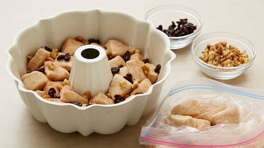

Home Page
Monkey Bread Recipe
Ingredients:
- 1/2 cup granulated sugar
- 1 teaspoon cinnamon
- 2 cans (16.3 oz) refrigerated Pullsbury Grands! Flaky Layers
Original Biscuits
- 1/2 cup chopped walnuts, if desired
- 1/2 cup raisins, if desired
- 1 cup firmly packed brown sugar
- 3/4 cup butter or margarine, melted
Steps:
- Heat oven to 350°F. Generously grease 12-cup fluted tube pan
with shortening or cooking spray. In large 1-gallon plastic
food storage bag, mix granulated sugar and cinnamon.
- Separate dough into 16 biscuits; cut each into quarters.
Shake in bag to coat. Arrange in pan, adding walnuts
and raisins among the biscuit pieces. Sprinkle any
remaining sugar over biscuits.

- In small bowl, mix brown sugar and butter; pour over
biscuit pieces.
- Bake 30 to 40 minutes or until golden brown and no longer
doughy in center. Loosen edges of pan with metal spatula.
Cool in pan 5 minutes. Turn upside down onto serving plate;
replacing any biscuit pieces and caramel from pan. Pull
apart to serve. Serve warm.
Source